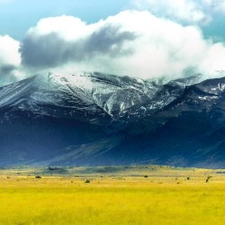
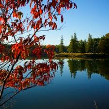
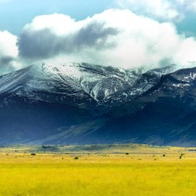
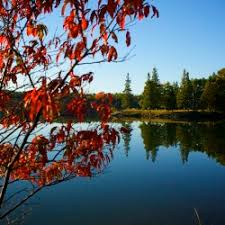

The best part about travelling is
the thrill that comes along with it!
A few Suggestions for the travels that
you may undertake
A debrie on the beach
Chennai, on the Bay of Bengal in eastern India, is the capital of the state of Tamil Nadu. The city is home to Fort St. George, built in 1644 and now a museum showcasing the city's roots as a British military garrison and East India Company trading outpost, when it was called Madras. read more

Colosseum
taly, a European country with a long Mediterranean coastline, has left a powerful mark on Western culture and cuisine. Its capital, Rome, is home to the Vatican as well as landmark art and ancient ruins. Other major cities include Florence, with Renaissance masterpieces such as Michelangelo's "David" and Brunelleschi's Duomo; Venice, the city of canals; and Milan, Italy's fashion capital.....read more